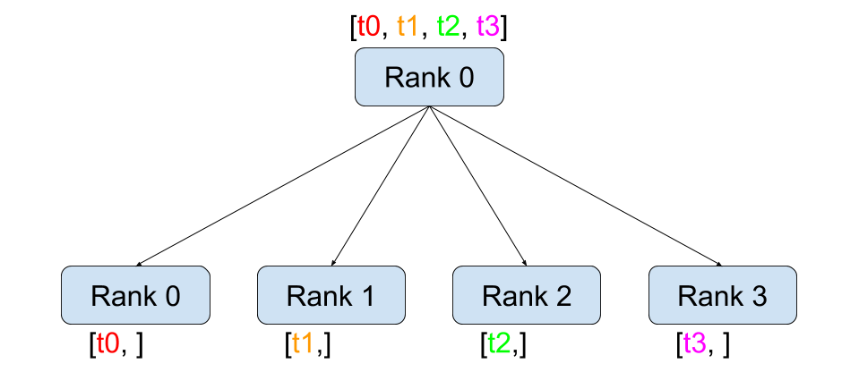
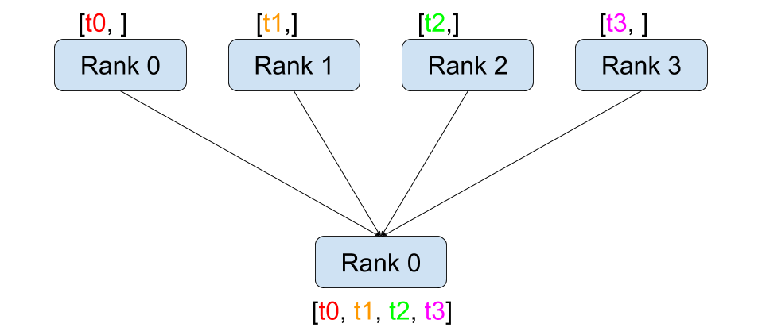

Pytorch로 분산 어플리케이션 개발하기¶
Author: Séb Arnold
이 짧은 튜토리얼에서 Pytorch의 분산 패키지를 둘러봅니다. 분산 설정 방법을 살펴보고, 다른 통신 전략을 사용하고, 몇몇 내부 패키지를 확인해 봅니다.
Setup¶
Pytorch에 포함된 분산 패키지 (i.e.,
torch.distributed)는 연구자와 개발자가 여러개의 프로세서와 머신 클러스터에서 계산을 쉽게 병렬화하게 해준다. 그렇게 하기 위해서, messaging passing semantics 가 각 프로세스가 다른 프로세스들과 데이터를 통신하도록 해준다. 다중 처리(torch.multiprocessing) 패키지와 달리 프로세스는 다른 통신 백엔드를 사용할 수 있으며
동일한 기계에서 실행되는 것으로 제한됩니다.
시작하려면 여러 프로세스를 동시에 실행할 수 있어야합니다. 컴퓨트 클러스터에 접속 할 경우 local sysadmin 으로 점검하거나 또는 선호하는 coordination tool을 사용하십시오. (e.g., pdsh, clustershell, or others) 이 튜토리얼에서는 다음 템플릿을 사용하여 단일 기기를 사용하고 여러 프로세스를 포크합니다.
"""run.py:"""
#!/usr/bin/env python
import os
import torch
import torch.distributed as dist
from torch.multiprocessing import Process
def run(rank, size):
""" Distributed function to be implemented later. """
pass
def init_processes(rank, size, fn, backend='tcp'):
""" Initialize the distributed environment. """
os.environ['MASTER_ADDR'] = '127.0.0.1'
os.environ['MASTER_PORT'] = '29500'
dist.init_process_group(backend, rank=rank, world_size=size)
fn(rank, size)
if __name__ == "__main__":
size = 2
processes = []
for rank in range(size):
p = Process(target=init_processes, args=(rank, size, run))
p.start()
processes.append(p)
for p in processes:
p.join()
위 스크립트는 각각 분산 환경을 설정하는 두개의 프로세스를 생성하고, 프로세스 그룹(dist.init_process_group)을 초기화하고, 마지막으로 주어진 run 함수를 실행합니다.
init_processes 함수는 동일한 IP 주소와 포트를 사용해서 모든 프로세스가 마스터를 통해서 조직 되게 한다. 우리는 TCP 백헨드를 사용했지만 대신
MPI 또는
Gloo 를 사용할 수 있습니다. (c.f.
Section 5.1) 이 튜토리얼의 마지막에 있는 dist.init_process_group 에서 일어나는 마법을 살펴봅니다. 그러나 기본적으로 프로세스는 자신의 위치를 공유하여 서로 통신 할 수 있습니다.
지점간 통신(Point-to-Point Communication)¶

전송과 수신
하나의 프로세스에서 다른 프로세스로 데이터를 전송하는 것을 지점간 통신이라고합니다. 이것은``send``와``recv`` 함수 또는 직접 대응부인 (immediate counter-parts) ``isend``와``irecv``를 통해 이루어집니다.
"""Blocking point-to-point communication."""
def run(rank, size):
tensor = torch.zeros(1)
if rank == 0:
tensor += 1
# Send the tensor to process 1
dist.send(tensor=tensor, dst=1)
else:
# Receive tensor from process 0
dist.recv(tensor=tensor, src=0)
print('Rank ', rank, ' has data ', tensor[0])
위의 예제에서 두 프로세스는 모두 값이 0인 Tensor 로 시작하고, 0번 프로세스는 Tensor 를 증가시키고 프로세스 1로 보내서 양쪽 모두 1.0으로 끝납니다. 프로세스 1은 수신 할 데이터를 저장하기 위해 메모리를 할당해야합니다.
또한 send /recv``는 ** blocking ** 으로 동작합니다. : 통신이 완료 될 때까지 두 프로세스 모두 멈춥니다. 반면에 Immediates ( ``isend``와``irecv)는 ** non-blocking **으로 동작 합니다; 스크립트는 실행을 계속하고 메서드는``wait ()``를 선택할 수있는``DistributedRequest`` 객체를 반환합니다.
"""Non-blocking point-to-point communication."""
def run(rank, size):
tensor = torch.zeros(1)
req = None
if rank == 0:
tensor += 1
# Send the tensor to process 1
req = dist.isend(tensor=tensor, dst=1)
print('Rank 0 started sending')
else:
# Receive tensor from process 0
req = dist.irecv(tensor=tensor, src=0)
print('Rank 1 started receiving')
req.wait()
print('Rank ', rank, ' has data ', tensor[0])
Immediates 를 사용할 때 보내고 받는 Tensor에 대한 사용법에 주의해야 합니다. 언제 데이터가 다른 프로세스와 통신 될지 알지 못하기 때문에, ``req.wait ()``가 완료되기 전에 전송된 Tensor를 수정하거나 수신된 텐서에 접근해서는 안됩니다.
다시 말하면,
dist.isend ()다음에tensor에 쓰면 정의되지 않은 동작이 발생합니다.dist.irecv ()다음에tensor를 읽으면 정의되지 않은 동작이 발생합니다.
그러나``req.wait ()``가 실행 된 후에 통신이 이루어진 것과, ``tensor [0] ‘’에 저장된 값이 1.0이라는 것이 보장됩니다.
지점 간 통신은 프로세스 통신에 대한 세분화 된 제어를 원할 때 유용합니다. 그것들은 Baidu’s DeepSpeech 또는 Facebook’s large-scale experiments.(c.f. Section 4.1) 와 같은 고급 알고리즘을 구현하는데 사용됩니다.
집단 통신 (Collective Communication)¶

Scatter |

Gather |

Reduce |

All-Reduce |

Broadcast |

All-Gather |
{kind=link}
{kind=link}
지점간 통신과는 달리 집단 통신은 ** 그룹(Group) **의 모든 프로세스에서 통신 패턴을 허용합니다. 그룹은 모든 프로세스의 하위 집합입니다. 그룹을 만들려면, ``dist.new_group (group)``에 순위 목록을 전달하면 됩니다. 기본적으로 집단 통신은 ** 월드(World) **라고도하는 모든 프로세스에서 실행됩니다. 예를 들어, 모든 프로세스에서 모든 텐서의 합을 얻으려면, “dist.all_reduce (tensor, op, group)” 를 사용할 수 있습니다.
""" All-Reduce example."""
def run(rank, size):
""" Simple point-to-point communication. """
group = dist.new_group([0, 1])
tensor = torch.ones(1)
dist.all_reduce(tensor, op=dist.reduce_op.SUM, group=group)
print('Rank ', rank, ' has data ', tensor[0])
그룹의 모든 텐서의 합이 필요하기 때문에 Reduce 연산자로``dist.reduce_op.SUM``을 사용합니다. 일반적으로 교환 법칙이 성립하는 수학 연산은 연산자로 사용할 수 있습니다.
특별히, PyTorch는 4개의 연산자를 제공하고 모두 요소 별로(element-wise) 작동합니다.:
dist.reduce_op.SUM,dist.reduce_op.PRODUCT,dist.reduce_op.MAX,dist.reduce_op.MIN.
``dist.all_reduce (tensor, op, group)``외에 현재 PyTorch에서 구현된 총 6개의 집단 통신이 있습니다.
dist.broadcast(tensor, src, group): ``src``에서 다른 모든 프로세스로``tensor``를 복사합니다.dist.reduce(tensor, dst, op, group): 모든``tensor``에``op``를 적용하고 그 결과를``dst``에 저장합니다.dist.all_reduce(tensor, op, group): reduce와 같지만 결과는 모든 프로세스에 저장됩니다.dist.scatter(tensor, src, scatter_list, group):i번째tensorscatter_list[i]를i번째프로세스에 복사합니다.dist.gather(tensor, dst, gather_list, group): ``dst``의 모든 프로세스에서``tensor``를 복사합니다dist.all_gather(tensor_list, tensor, group): 모든 프로세스에서``tensor``를 모든 프로세스의 `tensor_list``에 복사합니다.
분산 학습(Distributed Training)¶
알림: 이 섹션의 예제 스크립트를 `GitHub repository <https://github.com/seba-1511/dist_tuto.pth/>`__에서 찾으실 수 있습니다.
이제 분산 모듈이 어떻게 작동하는지 이해 했으므로 유용한 모듈을 작성해 보겠습니다. 우리의 목표는 `DistributedDataParallel <http://pytorch.org/docs/master/nn.html#torch.nn.parallel.DistributedDataParallel>`__의 기능을 복제하는 것입니다 . 물론, 이것은 교훈적인 예가 되지만, 실제 상황에서 위에 링크된 잘 검증되고 최적화 된 공식 버전을 사용해야합니다.
매우 간단하게 확률적 경사 하강법의 분산 버전을 구현하고자 합니다. 스크립트는 모든 프로세스가 데이터 배치에서 모델의 변화도를 계산한 다음 변화도를 평균합니다. 프로세스 수를 변경할 때 유사한 수렴 결과를 보장하기 위해 우선 데이터 세트를 분할해야합니다. (아래 단편 코드 대신에 tnt.dataset.SplitDataset, 를 이용할 수 있습니다.)
""" Dataset partitioning helper """
class Partition(object):
def __init__(self, data, index):
self.data = data
self.index = index
def __len__(self):
return len(self.index)
def __getitem__(self, index):
data_idx = self.index[index]
return self.data[data_idx]
class DataPartitioner(object):
def __init__(self, data, sizes=[0.7, 0.2, 0.1], seed=1234):
self.data = data
self.partitions = []
rng = Random()
rng.seed(seed)
data_len = len(data)
indexes = [x for x in range(0, data_len)]
rng.shuffle(indexes)
for frac in sizes:
part_len = int(frac * data_len)
self.partitions.append(indexes[0:part_len])
indexes = indexes[part_len:]
def use(self, partition):
return Partition(self.data, self.partitions[partition])
위의 단편 코드로 다음 몇 줄을 이용해 모든 데이터 세트를 간단하게 분할 할 수 있습니다.:
""" Partitioning MNIST """
def partition_dataset():
dataset = datasets.MNIST('./data', train=True, download=True,
transform=transforms.Compose([
transforms.ToTensor(),
transforms.Normalize((0.1307,), (0.3081,))
]))
size = dist.get_world_size()
bsz = 128 / float(size)
partition_sizes = [1.0 / size for _ in range(size)]
partition = DataPartitioner(dataset, partition_sizes)
partition = partition.use(dist.get_rank())
train_set = torch.utils.data.DataLoader(partition,
batch_size=bsz,
shuffle=True)
return train_set, bsz
2개의 복제본이 있다고 가정하면, 각 프로세스는 60000 / 2 = 30000 샘플의``train_set``을 가질 것입니다. 또한 전체 배치 크기 128을 유지하기 위해 배치 크기를 복제본 수로 나눕니다.
이제는 일반적인 forward-backward-optimize 학습 코드를 작성하고, 모델의 변화도를 평균하는 함수 호출을 추가 할 수 있습니다. (다음은 공식 `PyTorch MNIST 예제 <https://github.com/pytorch/examples/blob/master/mnist/main.py>`__에서 영감을 얻었습니다.
Assuming we have 2 replicas, then each process will have a train_set
of 60000 / 2 = 30000 samples. We also divide the batch size by the
number of replicas in order to maintain the overall batch size of 128.
We can now write our usual forward-backward-optimize training code, and add a function call to average the gradients of our models. (The following is largely inspired from the official PyTorch MNIST example.)
""" Distributed Synchronous SGD Example """
def run(rank, size):
torch.manual_seed(1234)
train_set, bsz = partition_dataset()
model = Net()
optimizer = optim.SGD(model.parameters(),
lr=0.01, momentum=0.5)
num_batches = ceil(len(train_set.dataset) / float(bsz))
for epoch in range(10):
epoch_loss = 0.0
for data, target in train_set:
data, target = Variable(data), Variable(target)
optimizer.zero_grad()
output = model(data)
loss = F.nll_loss(output, target)
epoch_loss += loss.data[0]
loss.backward()
average_gradients(model)
optimizer.step()
print('Rank ', dist.get_rank(), ', epoch ',
epoch, ': ', epoch_loss / num_batches)
단순히 모델을 취하여 world의 변화도를 평균하는 ``average_gradients (model)``함수를 구현하는 것이 남았습니다.
""" Gradient averaging. """
def average_gradients(model):
size = float(dist.get_world_size())
for param in model.parameters():
dist.all_reduce(param.grad.data, op=dist.reduce_op.SUM)
param.grad.data /= size
완성! 우리는 분산 동기식 SGD를 성공적으로 구현했으며 대형 컴퓨터 클러스터에서 모든 모델을 학습 할 수 있었습니다.
주의: 마지막 문장은 기술적으로 사실이지만 동기식 SGD의 상용 수준 구현하는 데 필요한 더 많은 트릭이 있습니다. 다시말하면 `검증되고 최적화 된 함수<http://pytorch.org/docs/master/nn.html#torch.nn.parallel.DistributedDataParallel>`__를 사용하십시오.
Our Own Ring-Allreduce¶
추가 과제로서 DeepSpeech의 효율적인 ring allreduce 를 구현하고 싶다고 상상해보십시오. 이것은 지점간 집단 통신 (point-to-point collectives)을 사용하여 쉽게 구현됩니다.
""" Implementation of a ring-reduce with addition. """
def allreduce(send, recv):
rank = dist.get_rank()
size = dist.get_world_size()
send_buff = th.zeros(send.size())
recv_buff = th.zeros(send.size())
accum = th.zeros(send.size())
accum[:] = send[:]
left = ((rank - 1) + size) % size
right = (rank + 1) % size
for i in range(size - 1):
if i % 2 == 0:
# Send send_buff
send_req = dist.isend(send_buff, right)
dist.recv(recv_buff, left)
accum[:] += recv[:]
else:
# Send recv_buff
send_req = dist.isend(recv_buff, right)
dist.recv(send_buff, left)
accum[:] += send[:]
send_req.wait()
recv[:] = accum[:]
위의 스크립트에서,`allreduce (send, recv)`함수는 PyTorch에 있는 것과 약간 다른 특징을 가지고 있습니다.
그것은 recv tensor를 취해서 모든 send tensor의 합을 저장합니다. 독자에게 남겨진 실습으로, 우리의 버전과 DeepSpeech의 차이점은 여전히 한가지가 있습니다: 그들의 구현은 통신 대역폭을 최적으로 활용하기 위해 경사도 tensor를 chunks 로 나눕니다. (힌트:
toch.chunk)
Advanced Topics¶
이제 torch.distributed 보다 진보된 기능들을 발견 할 준비가 되었습니다. 커버 할 부분이 많으므로 이 섹션은 두 개의 하위 섹션으로 구분됩니다:
- 통신 백엔드 : GPU-GPU 통신을 위해 MPI 및 Gloo를 사용하는 방법을 배웁니다.
- 초기화 방법 : ``dist.init_process_group ()``에서 초기 구성 단계를 가장 잘 설정하는 방법을 이해합니다.
통신 백엔드¶
``torch.distributed`의 가장 우아한면 중 하나는 다른 백엔드 위에서 추상화하고 빌드 할 수 있는 능력입니다. 앞서 언급했듯이 현재 PyTorch에는 TCP, MPI 및 Gloo의 세 가지 백엔드가 구현되어 있습니다. 그것들은 원하는 사용 사례에 따라 서로 다른 특징과 trade-off 를 가지고 있습니다. 지원되는 기능의 비교표는 `여기 <http://pytorch.org/docs/master/distributed.html#module-torch.distributed>`__에서 찾을 수 있습니다.
TCP 백엔드
지금까지 우리는 TCP 백엔드를 광범위하게 사용 해왔다. 그것은 대부분의 기계 및 운영 체제에서 작동하도록 보장기 때문에 개발 플랫폼으로 매우 편리합니다. 또한 CPU에서 모든 지점간 및 집단 통신 기능을 지원합니다. 그러나 GPU에 대한 지원은 없으며 통신 루틴이 MPI만큼 최적화되지 않았습니다.
Gloo 백엔드
Gloo 백엔드 <https://github.com/facebookincubator/gloo>`__는 CPU와 GPU 모두를 위한 *집단 통신* 절차의 최적화된 구현을 제공합니다. `GPUDirect 를 사용하여 CPU 메모리로 데이터를 전송하지 않고 통신을 수행 할 수 있기 때문에 GPU에서 특히 빛납니다. 또한 `NCCL <https://github.com/NVIDIA/nccl>`__을 사용하여 빠른 인트라-노드 (intra-node) 통신을 수행 할 수 있으며 인터-노드(inter-node) 루틴을 위한 `자체 알고리즘 <https://github.com/facebookincubator/gloo/blob/master/docs/algorithms.md>`__을 구현합니다.
버전 0.2.0부터, Gloo 백엔드는 PyTorch의 미리 컴파일 된 바이너리에 자동으로 포함됩니다. GPU에 모델 을 넣으면 배포 된 SGD 예제가 제대로 작동하지 않습니다. ``init_processes (rank, size, fn, backend = ‘tcp’)``에서``backend = ‘gloo’``를 먼저 바꾸어서 고쳐 보겠습니다. 이 시점에서 스크립트는 여전히 CPU에서 실행되지만 백그라운드에서 Gloo 백엔드를 사용합니다. 여러 GPU를 사용하려면 다음과 같이 수정하십시오.
init_processes(rank, size, fn, backend='tcp')=>init_processes(rank, size, fn, backend='gloo')model = Net()=>model = Net().cuda(rank)data, target = Variable(data), Variable(target)=>``data, target = Variable(data.cuda(rank)), Variable(target.cuda(rank))``
위의 수정으로 우리 모델은 이제 2개의 GPU에서 학습하고, ``watch nvidia-smi``로 사용률을 모니터링 할 수 있습니다.
MPI 백엔드
MPI (Message Passing Interface)는 고성능 컴퓨팅 분야의 표준 도구입니다. 그것은 지점간과 집단 통신을 가능하게하고 ``torch.distributed``의 API에 대한 주요 영감이었습니다. 다양한 목적으로 최적화된 여러 가지 MPI 구현 (예 : Open-MPI, MVAPICH2 Intel MPI)이 있습니다. MPI 백엔드를 사용하면 큰 컴퓨터 클러스터에서 MPI의 광범위한 가용성과 높은 수준의 최적화가 가능하다는 장점이 있습니다. 일부 최신 구현 들은 CPU를 통한 메모리 복사를 피하기 위해서 CUDA IPC와 GPU 다이렉트 기술를 활용하고 있습니다.
불행하게도 PyTorch의 바이너리는 MPI 구현을 포함 할 수 없으므로 수동으로 다시 컴파일해야합니다. 다행히도, 이 컴파일 과정은 매우 간단합니다. PyTorch는 사용 가능한 MPI 구현을 자동으로 살펴볼 것입니다. 다음 단계는 PyTorch를 `소스 <https://github.com/pytorch/pytorch#from-source>`__로 설치하여 MPI 백엔드를 설치합니다.
1. 아나콘다 환경을 만들고 활성화하고, `가이드 <https://github.com/pytorch/pytorch#from-source>`__에 따라 모든 필수 조건을 설치하십시오. 그러나 아직 ``python setup.py install``을 실행하지 마십시오. 2.
- Create and activate your Anaconda environment, install all the
pre-requisites following the
guide, but do
not run
python setup.py installyet. - Choose and install your favorite MPI implementation. Note that
enabling CUDA-aware MPI might require some additional steps. In our
case, we’ll stick to Open-MPI without GPU support:
conda install -c conda-forge openmpi - Now, go to your cloned PyTorch repo and execute
python setup.py install.
In order to test our newly installed backend, a few modifications are required.
- Replace the content under
if __name__ == '__main__':withinit_processes(0, 0, run, backend='mpi'). - Run
mpirun -n 4 python myscript.py.
The reason for these changes is that MPI needs to create its own
environment before spawning the processes. MPI will also spawn its own
processes and perform the handshake described in Initialization
Methods, making the rankand size
arguments of init_process_group superfluous. This is actually quite
powerful as you can pass additional arguments to mpirun in order to
tailor computational resources for each process. (Things like number of
cores per process, hand-assigning machines to specific ranks, and some
more)
Doing so, you should obtain the same familiar output as with the other
communication backends.
Initialization Methods¶
To finish this tutorial, let’s talk about the very first function we
called: dist.init_process_group(backend, init_method). In
particular, we will go over the different initialization methods which
are responsible for the initial coordination step between each process.
Those methods allow you to define how this coordination is done.
Depending on your hardware setup, one of these methods should be
naturally more suitable than the others. In addition to the following
sections, you should also have a look at the official
documentation.
Before diving into the initialization methods, let’s have a quick look
at what happens behind init_process_group from the C/C++
perspective.
- First, the arguments are parsed and validated.
- The backend is resolved via the
name2channel.at()function. AChannelclass is returned, and will be used to perform the data transmission. - The GIL is dropped, and
THDProcessGroupInit()is called. This instantiates the channel and adds the address of the master node. - The process with rank 0 will execute the
masterprocedure, while all other ranks will beworkers. - The master
- Creates sockets for all workers.
- Waits for all workers to connect.
- Sends them information about the location of the other processes.
- Each worker
- Creates a socket to the master.
- Sends their own location information.
- Receives information about the other workers.
- Opens a socket and handshakes with all other workers.
- The initialization is done, and everyone is connected to everyone.
Environment Variable
We have been using the environment variable initialization method throughout this tutorial. By setting the following four environment variables on all machines, all processes will be able to properly connect to the master, obtain information about the other processes, and finally handshake with them.
MASTER_PORT: A free port on the machine that will host the process with rank 0.MASTER_ADDR: IP address of the machine that will host the process with rank 0.WORLD_SIZE: The total number of processes, so that the master knows how many workers to wait for.RANK: Rank of each process, so they will know whether it is the master of a worker.
Shared File System
The shared filesystem requires all processes to have access to a shared
file system, and will coordinate them through a shared file. This means
that each process will open the file, write its information, and wait
until everybody did so. After what all required information will be
readily available to all processes. In order to avoid race conditions,
the file system must support locking through
fcntl. Note that
you can specify ranks manually or let the processes figure it out by
themselves. Be defining a unique groupname per job you can use the
same file path for multiple jobs and safely avoid collision.
dist.init_process_group(init_method='file:///mnt/nfs/sharedfile', world_size=4,
group_name='mygroup')
TCP Init & Multicast
Initializing via TCP can be achieved in two different ways:
- By providing the IP address of the process with rank 0 and the world size.
- By providing any valid IP multicast address and the world size.
In the first case, all workers will be able to connect to the process with rank 0 and follow the procedure described above.
dist.init_process_group(init_method='tcp://10.1.1.20:23456', rank=args.rank, world_size=4)
In the second case, the multicast address specifies the group of nodes
who might potentially be active and the coordination can be handled by
allowing each process to have an initial handshake before following the
above procedure. In addition TCP multicast initialization also supports
a group_name argument (as with the shared file method) allowing
multiple jobs to be scheduled on the same cluster.
dist.init_process_group(init_method='tcp://[ff15:1e18:5d4c:4cf0:d02d:b659:53ba:b0a7]:23456',
world_size=4)
Acknowledgements
I’d like to thank the PyTorch developers for doing such a good job on their implementation, documentation, and tests. When the code was unclear, I could always count on the docs or the tests to find an answer. In particular, I’d like to thank Soumith Chintala, Adam Paszke, and Natalia Gimelshein for providing insightful comments and answering questions on early drafts.